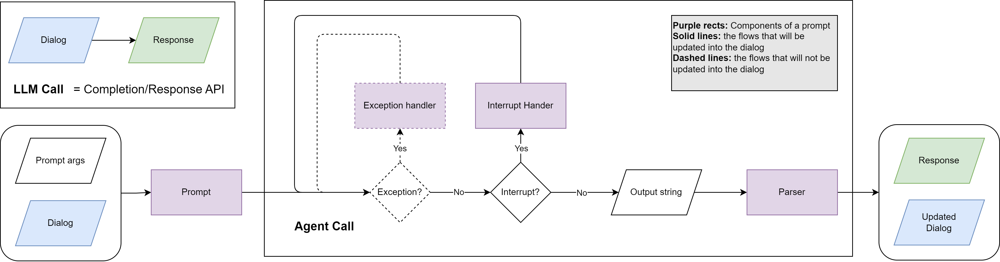

Agent
An Agent is LLLM's "caller" — it holds a system prompt and a base model, and executes prompts through a deterministic call loop. It is not a long-running process; it is stateless per call. The tactic creates fresh agent instances for each invocation and passes them the dialogs to work on.
agent.open("task_1", prompt_args={"topic": topic}) # create a dialog, seed with system prompt
agent.receive("Analyze this paper") # append user turn
response = agent.respond() # run the call loop, return Message
Declaration by Configuration
Agents are declared in YAML, not in Python. A config entry specifies everything about an agent: which model it uses, which system prompt it reads, and how its call loop behaves.
# configs/research_writer.yaml
agent_group_configs:
researcher:
model_name: gpt-4o
system_prompt_path: researcher_system # loaded from the prompt registry
temperature: 0.3
max_completion_tokens: 4000
max_exception_retry: 3
writer:
model_name: gpt-4o
system_prompt_path: writer_system
temperature: 0.7
build_tactic reads this config, resolves each system_prompt_path from the runtime, and constructs live Agent instances at call time:
from lllm import build_tactic, resolve_config
config = resolve_config("research_writer")
tactic = build_tactic(config, ckpt_dir="./runs")
# inside tactic.call():
researcher = self.agents["researcher"] # Agent instance, ready to use
For the full config schema — global defaults, model_args, inheritance via base, and multi-package vendoring — see Configuration.
LLM Call vs. Agent Call
| LLM Call | Agent Call | |
|---|---|---|
| Input | Flat list of chat messages. | Dialog owned by the agent, seeded with a system Prompt. |
| Output | Raw model string plus metadata. | AgentCallSession — delivered message, invoke traces, full diagnostics. |
| Responsibility | Caller decides whether to retry, parse, or continue. | Agent handles retries, parsing, exception recovery, and interrupts. |
| Determinism | Best-effort. | Guaranteed next state or explicit exception. |
A core philosophy of LLLM is to treat the agent as a "function" — the goal of the agent call is to make it as stable and deterministic as possible.

The Call Loop
agent.respond() runs a state machine that advances until it reaches a terminal state:
- The invoker calls the LLM and returns an
InvokeResult. - If parsing failed (
invoke_result.has_errors), the error is recorded and the prompt's exception handler generates a retry message. The dialog is forked for the retry so recovery messages never pollute the canonical history. - If the LLM returned tool calls, each function is executed, results are fed back via the interrupt handler, and the loop continues.
- If the LLM returned a plain assistant message, the loop transitions to
"success"and the message becomessession.delivery. - Network/API errors trigger backoff and LLM recall retries (up to
max_llm_recall).
Key types
InvokeResult — returned by the invoker per LLM call:
@dataclass
class InvokeResult:
raw_response: Any # raw API response
model_args: Dict[str, Any] # actual args sent to the API
execution_errors: List[Exception] # parse/validation errors
message: Optional[Message] # the clean conversational message
AgentCallSession — tracks the full lifecycle:
class AgentCallSession(BaseModel):
agent_name: str
state: Literal["initial", "exception", "interrupt", "llm_recall", "success", "failure"]
exception_retries: Dict[str, List[Exception]]
interrupts: Dict[str, List[FunctionCall]]
llm_recalls: Dict[str, List[Exception]]
invoke_traces: Dict[str, List[InvokeResult]] # all invocations per step
delivery: Optional[Message] # final message on success
Interrupt and Exception Handling
Each Prompt can specify inline handlers that the call loop uses automatically:
on_exception— receives{error_message}whenever parsing or validation fails. Called up tomax_exception_retrytimes. The dialog is forked for each retry.on_interrupt— receives{call_results}after function execution. Remains in the dialog for transparency.on_interrupt_final— fires when the agent hitsmax_interrupt_steps, prompting a natural-language summary.
Handlers inherit the prompt's parser, tools, and allowed functions, so a single prompt definition covers the entire agent loop.
Dialog Management
Agents own the dialogs they create, keyed by a user-chosen alias. The alias makes code self-documenting and prevents dialogs from leaking between agents.
agent = self.agents["coder"]
# Open a dialog — seeds with system prompt, becomes active
agent.open("task_1", prompt_args={"language": "Python"})
agent.receive("Write a sorting function")
response = agent.respond()
# Open a second dialog, switch between them
agent.open("task_2", prompt_args={"language": "Rust"})
agent.switch("task_1")
agent.receive("Now add error handling")
response = agent.respond()
# Fork a dialog for exploration (last_n messages carry over)
agent.fork("task_1", "task_1_alt", last_n=2, switch=True)
agent.receive("Try a different algorithm")
response = agent.respond()
For multi-agent collaboration, each agent maintains its own dialog. Information is shared explicitly by passing content between agents in the tactic:
coder.open("collab", prompt_args={...})
reviewer.open("collab", prompt_args={...})
coder.receive("Write a REST API")
code = coder.respond()
reviewer.receive(code.content, name=coder.name)
review = reviewer.respond()
coder.receive(review.content, name=reviewer.name)
revision = coder.respond()
Skills
Experimental. LLLM's skills support follows the agentskills.io open standard, which is itself new and actively evolving. Both the spec and this implementation may change in future releases. The config format, discovery paths, tool names, and activation behaviour described here reflect the current state and should not be considered stable API.
Skills are reusable, self-contained capability packages that you attach to an agent via config. They follow the agentskills.io open standard and let you add specialized knowledge, workflows, or tool access to any agent without modifying its system prompt directly.
global:
model_name: claude-sonnet-4-6
skills: [pdf, commit, skill_01abc, https://example.com/skills/review/SKILL.md]
When to use skills
Use skills instead of baking knowledge into the system prompt when:
- The capability is reusable across multiple agents or projects (e.g. "how to fill a PDF form", "git commit conventions").
- You want to version and share capabilities independently of your prompt definitions.
- You need Anthropic-managed tool grants (e.g. computer use) that must be declared server-side.
- The instructions are long enough that you only want to load them for agents that actually need them.
Do not use skills for:
- Agent-specific persona or role instructions — keep those in system_prompt / system_prompt_path.
- Configuration that changes per call (e.g. user name, date) — use prompt template variables instead.
Entry types
Each entry in the skills list is auto-classified by its format:
| Format | Example | Mechanism |
|---|---|---|
| Local name | pdf |
Scanned from standard directories; SKILL.md content injected into system prompt. Works with any LLM. |
| Anthropic skill ID | skill_01abc123 |
Passed to the Anthropic API as skills: [{id: ...}]. Content injected server-side. Anthropic models only. |
| URL | https://example.com/skills/review/SKILL.md |
Downloaded at agent build time; content injected into system prompt. Works with any LLM. |
"*" |
skills: "*" |
All locally discovered skills are loaded. |
Config examples
Same skills for all agents (global):
global:
model_name: claude-sonnet-4-6
skills: [pdf, commit, review-pr]
agent_configs:
- name: coder
system_prompt_path: system/coder
- name: reviewer
system_prompt_path: system/reviewer
Per-agent override:
global:
model_name: claude-sonnet-4-6
skills: [commit] # default: all agents get this
agent_configs:
- name: coder
system_prompt_path: system/coder
skills: [commit, pdf] # replaces global list for this agent
- name: reviewer
system_prompt_path: system/reviewer
# inherits global: skills: [commit]
Per-agent
skillsreplaces (not merges with) the global list. Specify the full set you want for that agent.
Mixed entry types:
agent_configs:
- name: analyst
system_prompt_path: system/analyst
skills:
- data-analysis # local skill
- skill_01abc123def # Anthropic-hosted skill (API-level)
- https://acme.com/skills/forecast/SKILL.md # remote skill
Load all local skills:
Local skill discovery
Local skill names are resolved by scanning these directories in order (first match wins):
<project>/.agents/skills/<name>/SKILL.md
<project>/.claude/skills/<name>/SKILL.md
~/.agents/skills/<name>/SKILL.md
~/.claude/skills/<name>/SKILL.md
Project-level paths take precedence over user-level paths, so you can override a shared skill locally.
Creating a local skill
A skill is a directory containing a SKILL.md file:
.agents/skills/
└── pdf/
├── SKILL.md # required: frontmatter + instructions
├── scripts/ # optional: Python/Bash helpers
└── references/ # optional: reference documents
SKILL.md uses YAML frontmatter followed by Markdown instructions:
---
name: pdf
description: >
Fill PDF forms, extract text, merge files. Use when the task
involves reading, writing, or transforming PDF documents.
license: MIT
allowed-tools:
- computer_20250124
- text_editor_20250124
---
# PDF Skill
## Filling a form
1. Open the PDF with `scripts/open_pdf.py`.
2. Locate the field by label using `get_field(label)`.
3. Write the value with `set_field(label, value)`.
4. Save with `save_pdf(output_path)`.
## Extracting text
Run `scripts/extract_text.py <input.pdf>` and pipe the output
to your analysis step.
Frontmatter fields:
| Field | Required | Description |
|---|---|---|
name |
Yes | Lowercase, numbers, hyphens only. Must match the directory name. |
description |
Yes | What the skill does and when to use it. |
license |
No | License identifier (e.g. MIT). |
allowed-tools |
No | Tools the skill needs (relevant for Anthropic-hosted skills). |
metadata |
No | Arbitrary key/value pairs (author, version, etc.). |
Anthropic-hosted skills
When an entry starts with skill_, LLLM passes it directly to the Anthropic API:
# model_args sent at call time:
# {
# "skills": [{"id": "skill_01abc123"}],
# "extra_headers": {"anthropic-beta": "skills-2025-10-02"}
# }
Anthropic injects the skill content server-side and grants any allowed-tools declared in the skill's manifest. This means:
- No token cost for skill content in your context window.
- Tool grants (computer use, text editor, etc.) are handled automatically.
- Versioning is managed by Anthropic — you reference the skill by ID, not by content.
To create and manage hosted skills, use the Anthropic Skills API (or LiteLLM's /skills endpoint):
from litellm import create_skill
import zipfile, os
os.makedirs("pdf", exist_ok=True)
with open("pdf/SKILL.md", "w") as f:
f.write(skill_content)
with zipfile.ZipFile("pdf.zip", "w") as z:
z.write("pdf/SKILL.md", "pdf/SKILL.md")
response = create_skill(
display_title="PDF Processing",
files=[open("pdf.zip", "rb")],
custom_llm_provider="anthropic",
)
print(response.id) # skill_01abc123 — use this in your config
Once you have the ID, put it directly in skills:
How it works at build time
At agent build time (AgentSpec.build()), SkillsConfig follows the agentskills.io progressive disclosure model:
Tier 1 — Catalog (local + URL skills)
Only skill names and descriptions are appended to the system prompt (~50–100 tokens per skill), plus a one-line instruction. An activate_skill tool is injected into the agent's function list:
<system prompt text>
When a task matches a skill's description, call the `activate_skill` tool
with that skill's name to load its full instructions before proceeding.
<available_skills>
<skill name="pdf">
<description>Extract PDF text, fill forms, merge files. Use when handling PDFs.</description>
</skill>
<skill name="commit">
<description>Write conventional commit messages. Use before git commit.</description>
</skill>
</available_skills>
Tier 2 — Activation (on demand)
When the model calls activate_skill(name="pdf"), it receives the full SKILL.md body, the skill directory path (so it can resolve relative references), and a listing of any bundled resource files:
<skill_content name="pdf">
# PDF Processing
...full instructions...
Skill directory: /path/to/.agents/skills/pdf
Relative paths in this skill resolve against the skill directory.
<skill_resources>
<file>scripts/extract.py</file>
<file>references/REFERENCE.md</file>
</skill_resources>
</skill_content>
Tier 3 — Resources (on demand)
After activating a skill, the model can load any referenced files using its standard file-reading capability. Scripts, reference documents, and assets are loaded only when the instructions actually call for them.
Anthropic-hosted skill IDs skip tiers 1–3 entirely — they are merged into model_args before every API call:
model_args["skills"] = [{"id": "skill_01abc"}]
model_args["extra_headers"] = {"anthropic-beta": "skills-2025-10-02"}
Anthropic handles content injection and tool grants server-side.
allowed-tools
The allowed-tools frontmatter field has different semantics depending on how the skill is loaded:
Anthropic-hosted skills (skill_01abc): allowed-tools is processed server-side. Tool grants (computer use, text editor, etc.) are applied automatically. No action required on your end.
Local and URL skills: allowed-tools is informational only. When the model activates a skill via activate_skill, the tool response includes a note listing the declared tool requirements. The agent does not automatically receive those tools — you must ensure they are configured on the agent's Prompt definition. If a skill needs API-level tool grants (e.g. computer_20250124), use the Anthropic-hosted version instead.
Best practices
Use progressive disclosure by default. The catalog + activate_skill pattern means agents with many installed skills pay only ~50–100 tokens per skill upfront. Full content is only loaded when actually needed.
Prefer Anthropic-hosted skills for tool-heavy capabilities. If a skill needs computer_20250124, text_editor_20250124, or other API-level tool grants, hosting it on Anthropic is the only way to get those tools granted automatically. For local skills, you'd have to manually wire up the tools yourself.
Keep SKILL.md under 500 lines. Move detailed reference material to references/ files — the model can load them on demand from the <skill_resources> listing. This keeps tier-2 activation tokens low.
Write description as a trigger, not a title. The description is the only thing the model sees before deciding whether to activate a skill. Write it to answer "when should I use this?" with concrete keywords. Extract PDF text, fill forms, merge files. Use when handling PDFs. is better than PDF utilities.
Scope skills to the agents that need them. Giving every agent every skill bloats the catalog. Set skills globally when they apply universally; override per-agent for specialised roles. Per-agent skills replaces the global list, not merges with it.
Version control your .agents/skills/ directory. Local skills are just files — commit them alongside your prompts and configs so the team shares the same capabilities.
URL skills are fetched at build time, not call time. If the remote URL is unreachable, a warning is logged and the skill is silently skipped. Cache important remote skills locally for reliability.
Diagnostics
Pass return_session=True to get the full AgentCallSession alongside the message:
class ResearchTactic(Tactic):
def call(self, task: str, **kwargs):
agent = self.agents["researcher"]
agent.open("research", prompt_args={"topic": task})
session = agent.respond(return_session=True)
print(session.delivery.parsed) # structured output (if Pydantic format)
print(session.delivery.cost) # token costs
print(len(session.invoke_traces)) # number of interrupt steps taken
print(agent.current_dialog.tree_overview()) # dialog tree structure
return session.delivery.content